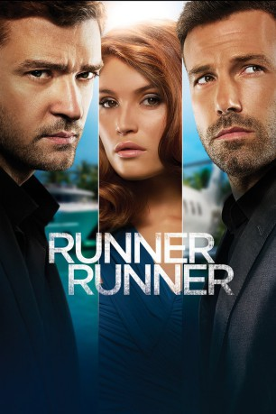
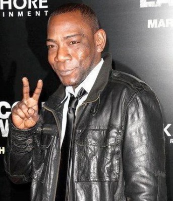

#2236 Runner Runner
 
 IMDB-Wertung: 5.6 / 10
IMDB-Wertung: 5.6 / 10  Metascore: 36
Metascore: 36 
Das größte Hobby des Princeton-Studenten Richie Furst ist Online-Poker. Leider hat er seine Leidenschaft nicht unter Kontrolle und er verspielt seinen Studien-Fond. Richie glaubt, dass er von seiner Online-Platform betrogen wurde. Um sein Geld zurück zu fordern, beschließt Richie selbst nach Costa Rica zu reisen, von wo aus der windige Millionär Ivan Block seine Poker-Webseite betreibt.
Jahr: 2013
Dauer: 88 Minuten
FSK: 12
Land: USA Studio: 20th Century FoxTonspuren: DTS - ,
Untertitel: Deutsch, Englisch,
Auflösung: 1080p (1920x800) Größe: 9553 MB
Genre: Thriller, Krimi
Regisseur: Brad Furman
Drehbuch: Brian Koppelman, David Levien
Soundtrack: Christophe Beck
Darsteller:
 Justin Timberlake als Richie Furst
Justin Timberlake als Richie Furst Ben Affleck als Ivan Block
Ben Affleck als Ivan Block Gemma Arterton als Rebecca Shafran
Gemma Arterton als Rebecca Shafran Anthony Mackie als Agent Shavers
Anthony Mackie als Agent Shavers Michael Esper als Billy 'Pet' Petricoff
Michael Esper als Billy 'Pet' Petricoff Oliver Cooper als Andrew Cronin
Oliver Cooper als Andrew Cronin- Christian George als Wilson
 Yul Vazquez als Delegate Herrera
Yul Vazquez als Delegate Herrera John Heard als Harry Furst
John Heard als Harry Furst- James Molina als Esteban
 Louis Lombardi als Archie
Louis Lombardi als Archie Vincent Laresca als Sergeant Barrancas
Vincent Laresca als Sergeant Barrancas- Sam Palladio als Shecky
 David Costabile als Professor Horstein
David Costabile als Professor Horstein- Jordan Beder als Paul Arnaud
 Bob Gunton als Dean Alex Monroe
Bob Gunton als Dean Alex Monroe Ben Schwartz als Craig
Ben Schwartz als Craig Dayo Okeniyi als Lionel
Dayo Okeniyi als Lionel- Randall M. Corsi als Robe
- Laura Aleman als Masseuse
- Hugh Scott als Shooter
 Carlos Sanz als Police Captain
Carlos Sanz als Police Captain Sam Upton als Agent Poole
Sam Upton als Agent Poole- Sandha Khin als Shooter's Girlfriend
- Deadmau5 als DJ
- David Castro als Airport Security
- Jeannine Kaspar als Ashley , uncredited
- Samuel F. Klein als Princeton Pedestrian , uncredited
-  Laurence Mason als Governor , uncredited
- Christopher McLinden als Lico, 1st Student , uncredited
- Diana Noris als Sandra Leon , uncredited
- Gil O'Brien als NYC Pedestrian , uncredited
- Justin Paul als Bar Back , uncredited
- Jon Douglas Rainey als Businessman , uncredited
 Brian Tester als Casino Whale , uncredited
Brian Tester als Casino Whale , uncredited- Bernie O. Ramos Robledo als Handlebar Mustache
- Mike Sampedro als Lou Roach
- Clifford Myatt als Towel
- Doug Weinberg als Angle Shooter
- Margarita Álvarez als Junior Executive
- Carlos M. Gonzalez als Stickman
- Nayka M. Vallejo als SUV Girl
- Dalissa Nevarez als Girl
- Yessenia Monge als Esteban's Wife
- Phil Laak als Poker Player
- Antonio Esfandiari als Poker Player
- Efrain Canino Santos als Passport Official
- Sam Mendoza als Ground Crew Member
- Natasha Lopez Cruz als Flight Attendant
- Jim Cruz als Helicopter Pilot
Datei: X:\2013(N-Z)\Runner Runner (2013, FSK12, 1920x800).mkv seit 22.10.2015
Festplatte: HD 2013(I-Z)-2014(A-Z)
 Es gibt insgesamt 133 Filme in der Gruppe '2013(N-Z)'
Es gibt insgesamt 133 Filme in der Gruppe '2013(N-Z)'